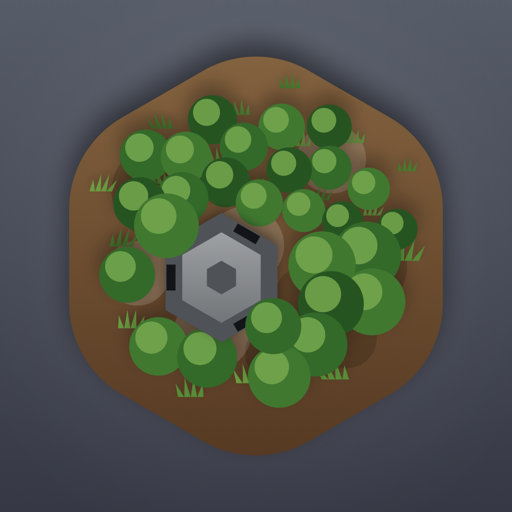
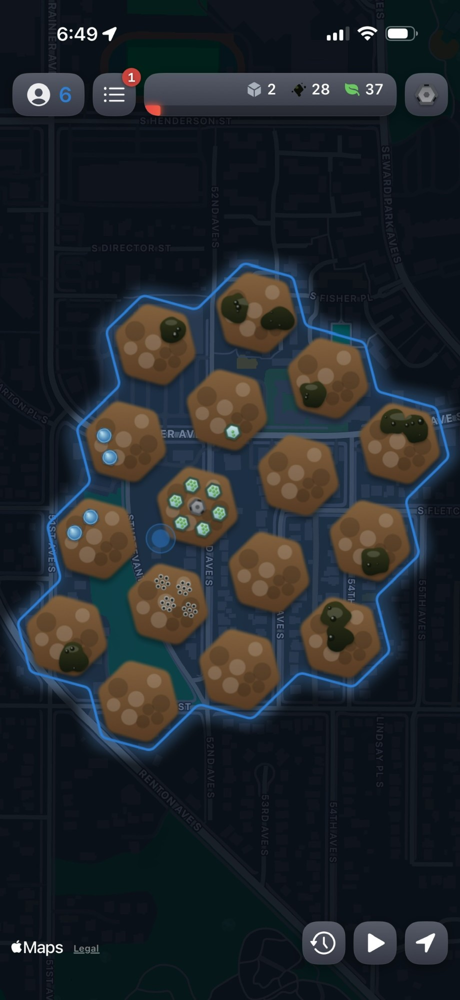

Move to claim
Head out for a workout. The route you cover becomes territory you pull back from the contamination, tile by tile.

Reverdure Join the betaiPhone & Apple Watch · Now in beta
A territorial strategy game powered by your real workouts. Get out and move to reclaim ground after an alien invasion, clear it of contamination the aliens left behind, and Reverdure the world with green, collaboratively with the people around you.

There's only one way to push it back: real effort, in the real world. Every workout you do turns into ground reclaimed. No effort means no progress, and there's no way to buy your way ahead.
How it works
Head out for a workout. The route you cover becomes territory you pull back from the contamination, tile by tile.
Spend the effort you earned to clear the contamination and Reverdure the world, growing new plants in greenhouses and fighting horrors you find in the wasteland.
Cooperation only works with people who are physically near you. Your housemate, or the coworker who lives a few blocks over. You reinforce each other's territory, so when you want backup you can ask for help from a friend. You're getting someone you know to come outside.
What makes it different
Your watch reads your heart rate, so the game knows whether you actually worked. Strap your phone to a record player to fake the GPS if you want. Without a real heartbeat behind it, you've earned nothing.
A walk counts. So does a bike ride, or a session on the rowing machine you forgot you owned. The watch only cares that your heart is working, and the map is just where that effort turns up.
Money never buys an advantage, and it never will. You can't skip the work with a credit card.
You can thank people and reinforce their ground, but there's no way to grief them. No button targets a person, and there's no chat to be nasty in. Whatever you send another player, it can't be hostile.
Why it exists
The map and the aliens are there to make this fun enough that you keep opening it. The actual job is simpler: get you moving more, and still moving next month. When a feature would juice my numbers without making you any healthier, I don't ship it.
FAQ
Yes, I know. It's all built on an Apple Maps renderer right now. I'll redo it in a proper game engine eventually.
Because you're probably listening to music during your workout.
I'll have an optional subscription, both to support me (hi, I'm Ben!) and to support more growth, like additional builders, an energy meter that goes higher, and having more allies.
Your health and fitness data never leaves your device. Your interactions with the game world itself go to the game service, including which tiles you capture during a workout, what you clean, build, and grow, and your interactions with other players. Capturing tiles in the game world does inherently provide location to the game service, and that seems inherent to the game, but I'm open to ideas on how to avoid it! I will never sell user data to anyone for any reason, nor sell the company to anyone who would.
You're awesome! Email me at ben@yourstrategy.co if you'd like to help, ask questions, complain, or tell me about your cult!